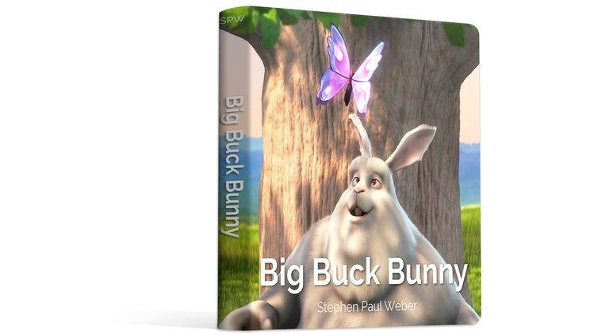

My life has been going through some transitions recently. My siblings are all married, and one recently had a baby. I got engaged. The sort of changes that get you thinking about the future. The sort of changes that get you thinking about what you want for your kids.
For quite some time now, I've been an advocate for digital freedoms, for free culture. I promote libre-licensed music, movies, video games, and books to my friends (and sometimes on the street). Jamendo is filled with pop and rock and metal and electronic music of all varieties. There are movies like Star Wreck and documentaries like RiP. So much work to use, share, and remix.
But when I watch my fiancé's little cousins or my niece, I see Disney colouring books and wallpapers and toys and t-shirts filling their lives. When I go to shop for my niece, what do I get her? I can get her a stuffed baby GNU, but I quickly run out of options. There is no obvious source for libre characters appearing in colouring pages, activity books, or baby books. The Blender Institute has a few cartoons from which characters could be drawn, but little additional content (since their focus is to promote the Blender software).
It's not that I think we can somehow fill the next generation's lives with only libre content based on libre characters, and drive the Disney out. I'm not sure we even really want to do that. But I would like kids to be able to grow up loving at least one set of content that they can build on and be creative with as they grow older. Kids who have as a natural part of the cultural and artistic expression language at least one element they are actually allowed to make use of.
I don't think I'm alone in this. The free culture movement is filled with parents and aunts and uncles who have probably been thinking about these issues even longer than I have. I cannot change this by myself, nor can a body of work spring up overnight, but I want to get something moving. After a long discussion with a friend, I decided the first thing to try would be a baby board book. In the spirit of free culture (and in the spirit of having a body of related work) I am not creating this book from scratch, but rather basing it on the excellent Big Buck Bunny. I have found a printing company in the USA that does an excellent job of smaller-run board book printing, taught myself all the tricks in Inkscape that I needed in order to produce a draft, and been in contact with Crowd Supply about what I need to get ready for a crowd funding effort.

What I need now, is you. The crowd funding has not started yet, but if you are interested in helping this project move forward please register your email address on the prelaunch page. This gives me a much better idea of what sort of volume the final crowd funding (later this year) will be able to get, and gives the project some momentum right from the start (which is very important for any successful crowd funding).
What will the crowd funding include? Well, the full source files (in SVG) and an eBook version of the baby book will be made available to anyone who backs, and afterwards to the whole world if we're successful, under a Creative Commons Attribution ShareAlike license. The physical printed books themselves (printed in the USA) will be available to backers who pledge enough (final costs still being worked out). Other things (kid-size thirts? stickers?) may also be a part of this, so let me know if you have any really good ideas!
Also, if you are a Facebook user, you can also promote this campaign by sharing/liking the Facebook page.
I have put up a promo video for the book on YouTube and on Archive.org: